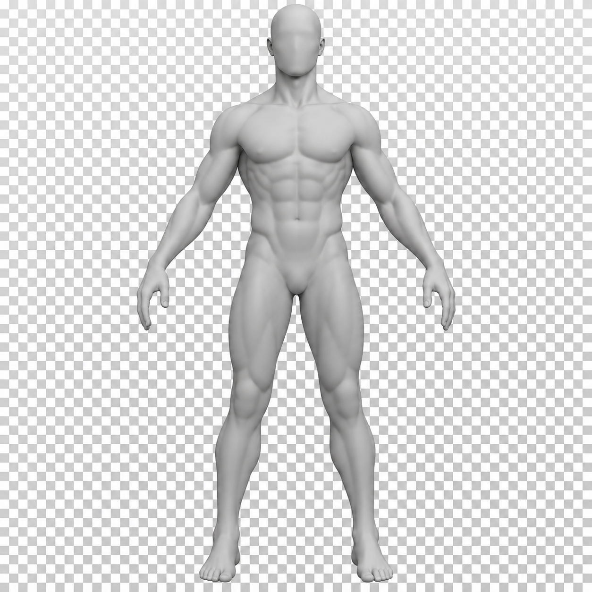

Diagnóstico de transparência do avatar
Esta página lê os pixels do PNG diretamente no seu navegador. A imagem não é enviada para nenhum servidor.
Carregando imagem…

Resultado da análise
Aguardando leitura dos pixels…
Esta página lê os pixels do PNG diretamente no seu navegador. A imagem não é enviada para nenhum servidor.
